TEST_ONLY · Keine Produktionsfreigabe. Chromium/Linux, synthetische Daten. Keine iPhone-/Safari-Abnahme.
Vorher: f02106e. Nachher: isolierte App-Anbindung. Reader-Aufnahmen verwenden denselben Navigationsanker und gleiche Viewports. 200-%-Aufnahmen zeigen den oberen Bereich und die durch Scrollen erreichbaren Antworten getrennt. Kein Mockup.
Technischer Bericht: IMPLEMENTATION_REPORT.md. App über den Paketserver starten; nicht per Doppelklick auf app/index.html.
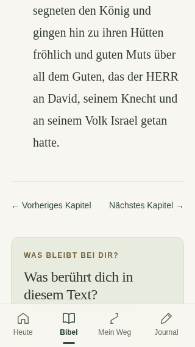
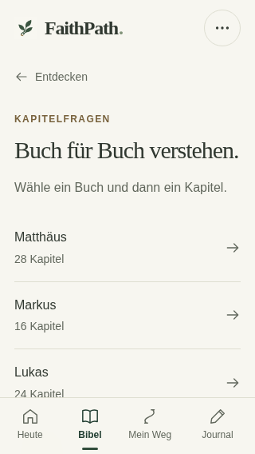
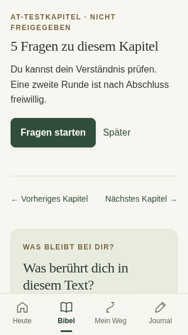
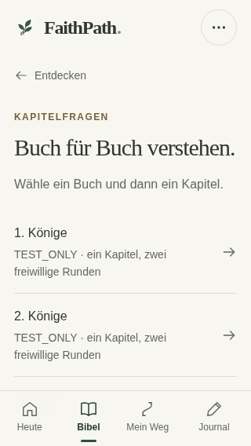
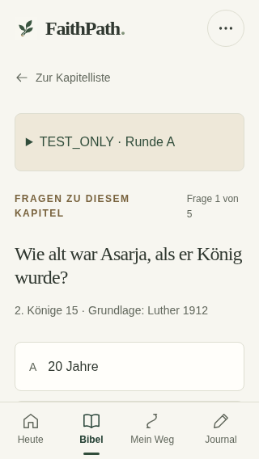
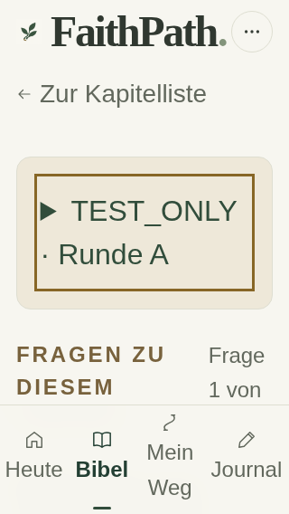
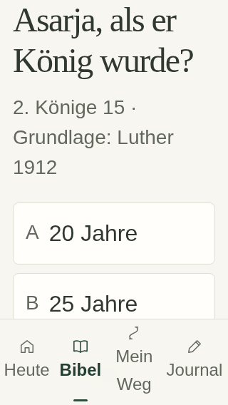
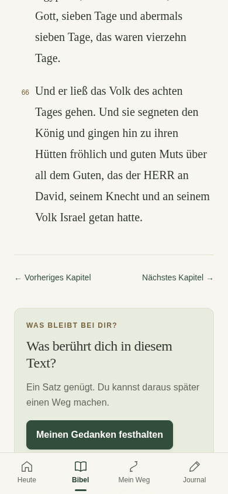
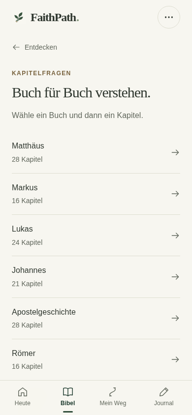
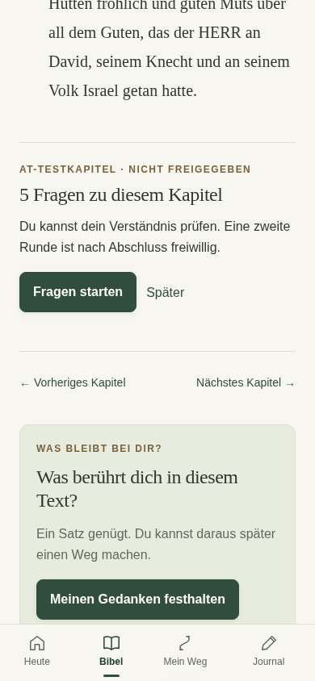
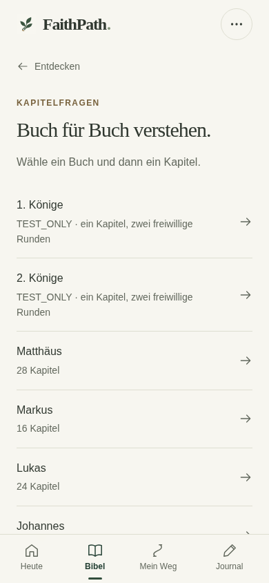
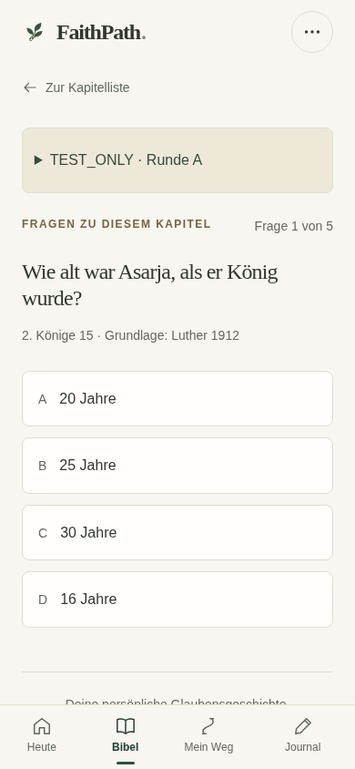
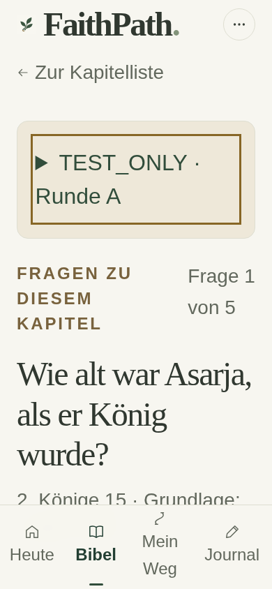
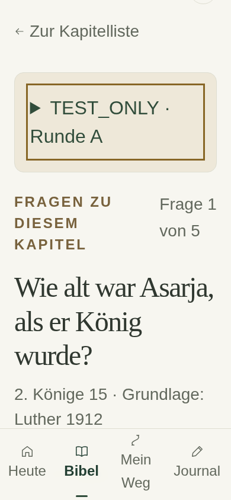
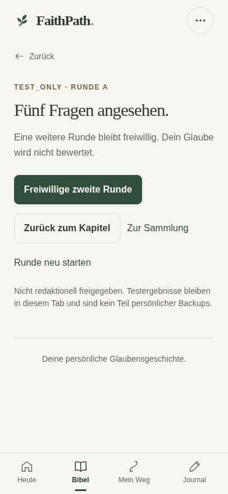